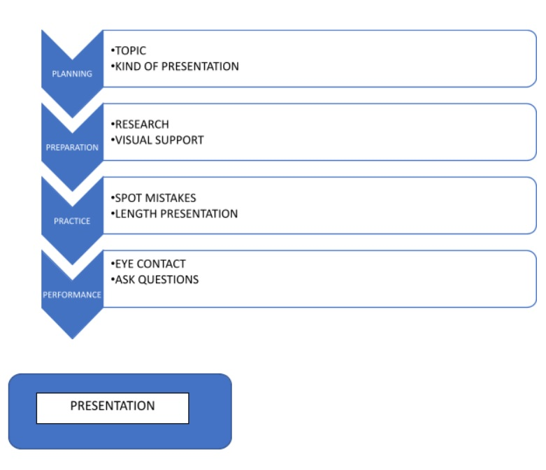
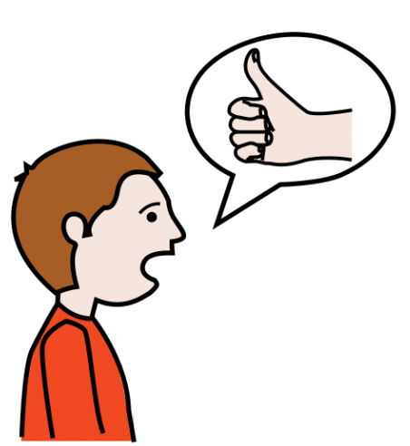
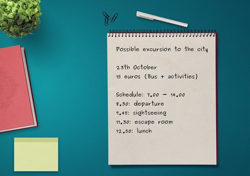
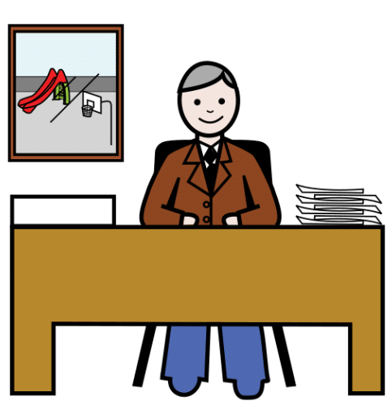
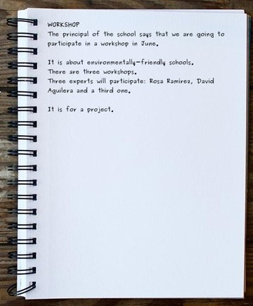
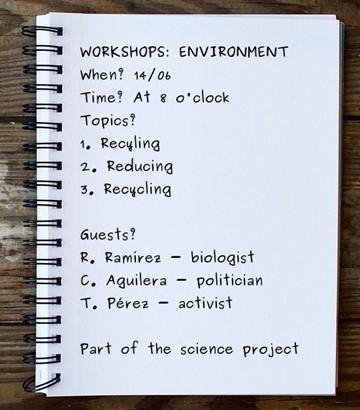

Attention please! My travel plan!
Attention please! My travel plan!
Leonardo Da Vinci y el inglés
4.3. Develop your presenter talent
1. Become a good presenter!
Become a good presenter!
Did you know that people who are good at giving presentations often get more possibilities in life? Being or not being good at talking to an audience is not a talent you are born with but a skill you can learn. Now it’s time to develop our presentation skills. How? By giving presentations because “the more presentations you give, the better you become.”

"Hi, I am Grace. I work at a travel agency. An important part of my job is presenting different travel plans. In my first presentations, I was very nervous but these tips helped me a lot. Let’s have a closer look at them."
Tip 1: Planning (written)
- Choose your topic (my best school trip) and decide your central message.
- Choose what kind of presentation you want to design: an informative one, a humorous one or a story.
Tip 2: Preparation (visual support)
- Do research or remember the experience.
- Write a basic structure: think of the main points related to your central message.
- Add details.
Visual Support
Visual support should include:
- Front and back slide.
- The different parts of a travel plan.
- Short sentences.
- A selection of vivid images, videos or audios, copyright-free or from your album.
- A good choice of fonts: type, size, colour, position, etc.
Check that your visual support is not too busy!
Tip 3: Practice (oral)
- Practice is very important. It helps you spot mistakes and make changes.
- It allows you to appreciate how long the presentation will take. Avoid reading from the screen.
The more you practice, the better your presentation is.
Tip 4: Performance
All the hard work is done! So, there is nothing to be nervous about.
- Eye contact helps to catch attention, therefore, look at your classmates.
- You can also ask them questions. This makes your presentation more interactive.
- Don’t worry about small mistakes, just continue…
- and … don’t forget to smile!
To sum up:

 Definition:
To make it possible for something to take place or for a person to do or say something.
Posibilitar que algo tenga lugar o que una persona pueda hacer o decir algo.
Example:The teacher allowed the students to use the pencil to take the exam.
El profesor permitió que los alumnos utilizaran el lápiz para hacer el examen.
Definition:
To stop oneself from doing something.
Impedir que ocurra algo.
Example:I avoid studying at night.
Evito estudiar de noche.
Definition:
Finding out where something or someone is.
Averiguar el lugar en el que se encuentra algo o alguien.
Example:The student spotted the errors in the sentences of the exercise.
El estudiante localizó los errores en las frases del ejercicio.
2. Passengers onboard, may I have your attention, please?
The cabin crew has prepared these activities for you. If you want to become the best presenter, go ahead!
Option A: The class delegate
Imagine you are the delegate of your class and you have been attending a meeting with the principal of the school, who suggests that you may go on an excursion. You wrote down the following notes:

Record yourself presenting the information.
 Definition:
Person in charge of leading and managing an entity or activity.
Persona encargada del mando y gestión de una entidad o actividad.
Example:The school principal presented the activities.
La directora del colegio presentó las actividades.
Option B: The audience
Read the following notes about the schedule for a special day about environmentally-friendly schools. Decide which one you would choose to present the activity to your classmates. Use the following items:
- The handwriting is clear enough.
- The ideas are well-organised.
- The information is complete.
| Option A | Option B |
|  |  |
Trust yourself...
Self-confidence is the best tool.
Think of one of your strengths and keep on working!
Do you need more details to improve your presentation?
Have a look at the guide to compose oral and written texts here:
3. Check what I’ve learnt
Everything you learn helps you achieve the goals you set for yourself. Reflect for a moment on all you have learned so far. Complete STEP 3 of your Learning Journal (I review what I have learned).
Remember:
- Ask your teacher whether you will fill it in on paper or on the computer.
- If you fill it in on the computer, don't forget to save it on your computer when you finish it! Cheer up, you'll do great!
¿Necesitas más ayuda?
Reflexiona un momento sobre todo lo que has aprendido hasta llegar aquí. Y completa el PASO 3 de tu Diario de aprendizaje (Reviso lo aprendido).
Recuerda:
• Pregunta a tu profesor o profesora si rellenarás la ficha en papel o en el ordenador.
• Si la rellenas en el ordenador, ¡no te olvides de guardarla en tu ordenador cuando la termines!
¡Ánimo, que lo harás genial!
Obra publicada con Licencia Creative Commons Reconocimiento Compartir igual 4.0